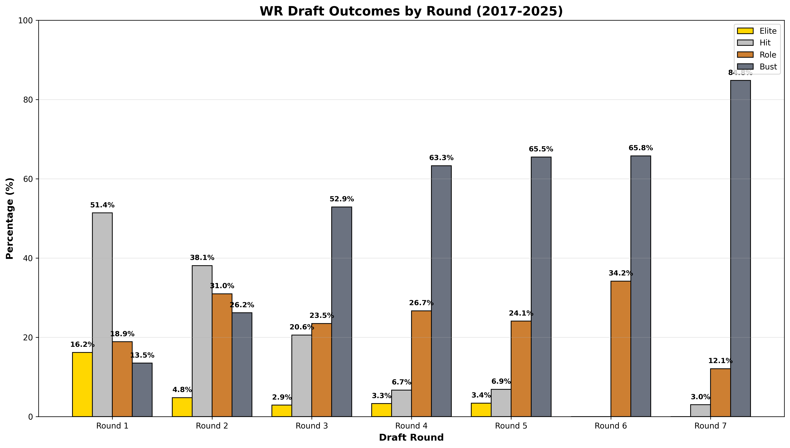
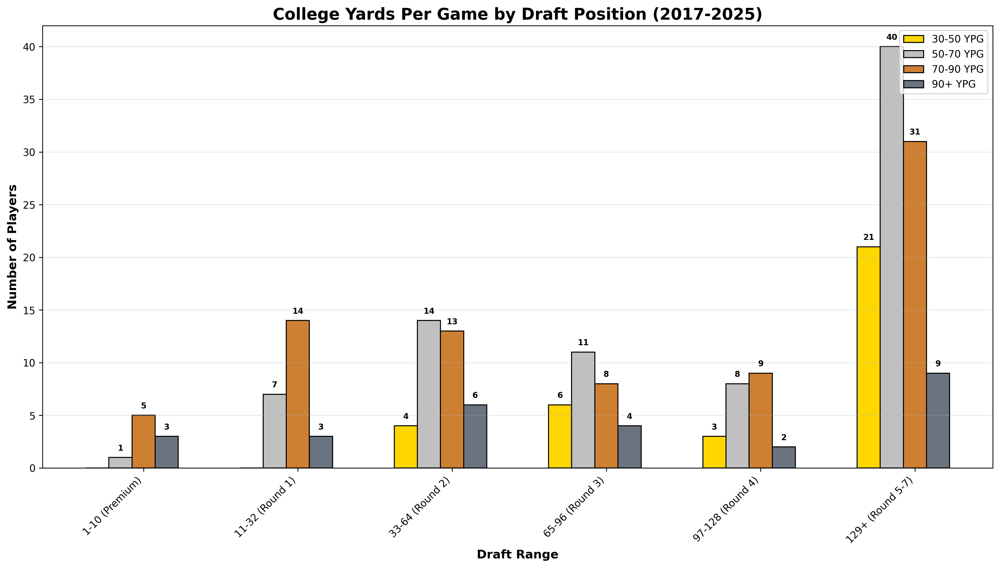
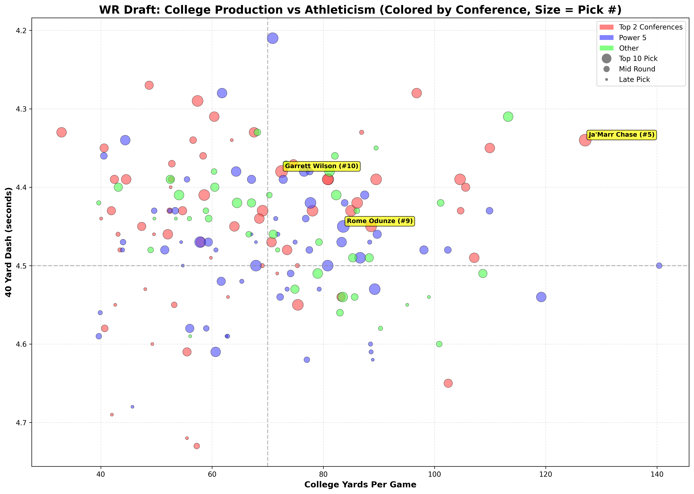
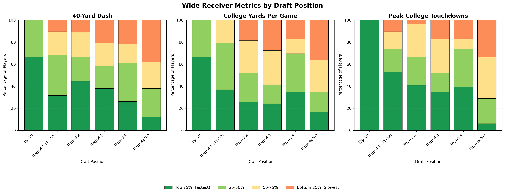

Quinn Glenn
About Me
Computer Science student at Oregon State University (3.95 GPA) with professional data operations experience and a passion for sports analytics. I enjoy transforming complex datasets into actionable insights through Python, SQL, and data visualization. My NFL draft analytics project demonstrates my ability to build databases, analyze trends, and present findings in a clear, compelling way.
Featured Project: NFL Draft Analytics
A comprehensive analysis of NFL wide receiver drafts from 2017-2025, exploring the relationship between college production, combine athleticism, and NFL success.
Draft Hit Rate Analysis
Developed tiered classification system to evaluate WR success based on statistical thresholds. Analyzed hit rates by draft round to identify value picks.
View AnalysisCollege Production vs Draft Position
Analyzed how college yards per game correlate with where receivers are drafted, segmented by conference strength.
View AnalysisCombine Athleticism Scatter Plot
Multi-dimensional visualization showing college production vs 40-yard dash time, with point size indicating draft position and color representing conference tier.
View AnalysisPredictive NFL Success
Analyzed Next Gen Stats to discover that YAC above expected is the strongest separator between Elite and Bust receivers. Tested which college stats (yards per catch, peak TDs) and combine metrics (40 time, 3-cone, broad jump) actually predict who will excel after the catch.
View AnalysisKey Visualizations

WR Draft Hit Rates by Round

College YPG by Draft Position

College Production vs Athleticism

College YPG vs Draft Position

Draft Position vs Athleticism/Production
Technical Skills
Work Experience
Data Operations Intern - Faria Education Group
Jun 2022 – Dec 2024 | Portland, OR
- Performed data validation and analysis on large-scale student information system migrations
- Collaborated cross-functionally to meet project deadlines and resolve data issues
- Developed strong time management skills in fast-paced environment
Tutor - Trio
Sept 2022 – Dec 2023 | Corvallis, OR
- Provided one-on-one tutoring in math and computer science
- Translated complex technical concepts for non-technical learners
- Developed communication strategies applicable to user support and training
Education
Oregon State University
Bachelor of Science, Applied Computer Science: Simulation and Game Programming
Communications Minor | GPA: 3.95/4.0
Summa Cum Laude | Dean's List | Finley Academic Scholarship
Relevant Coursework: Data Structures, Algorithms, Databases, Operating Systems, Software Engineering I/II